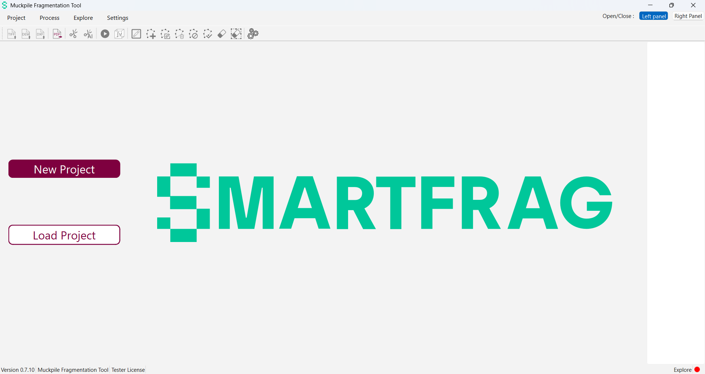
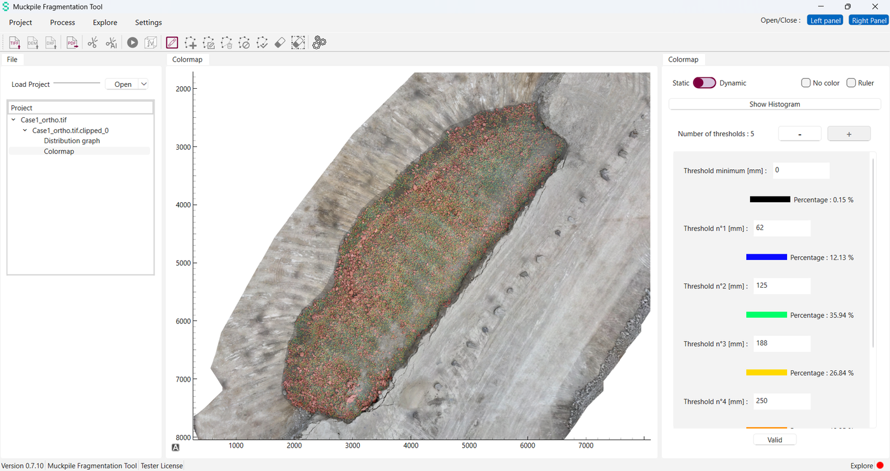
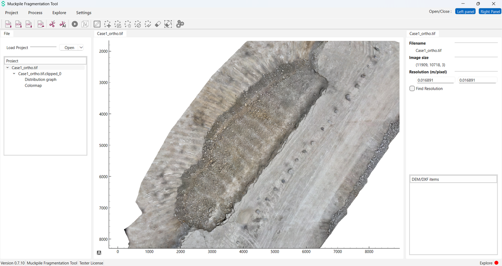
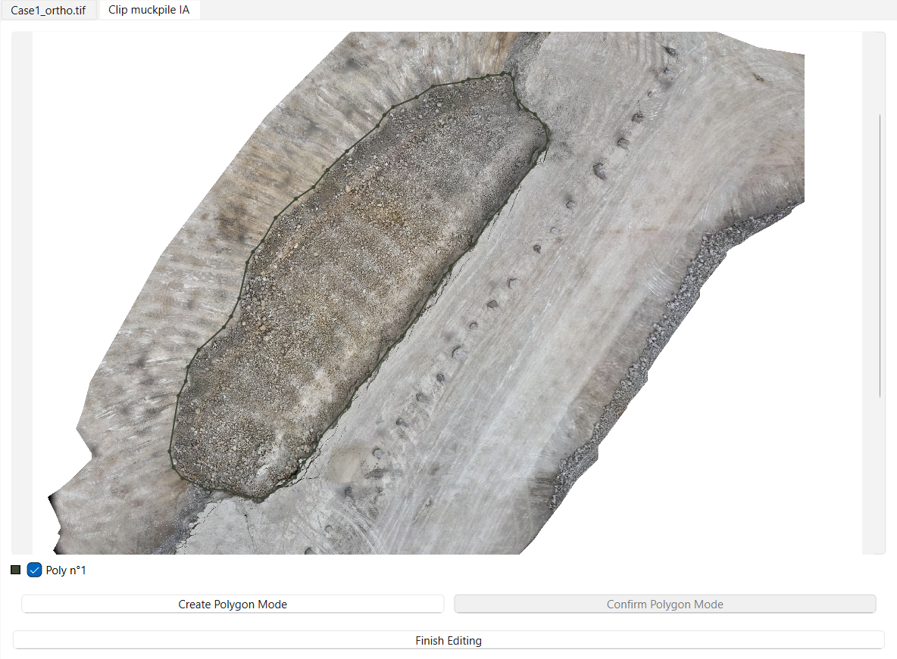
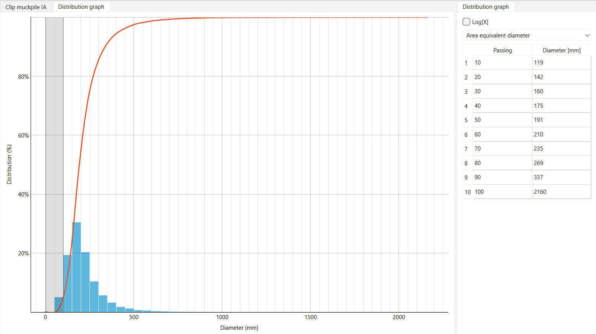
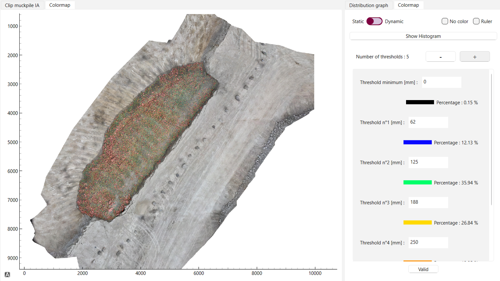
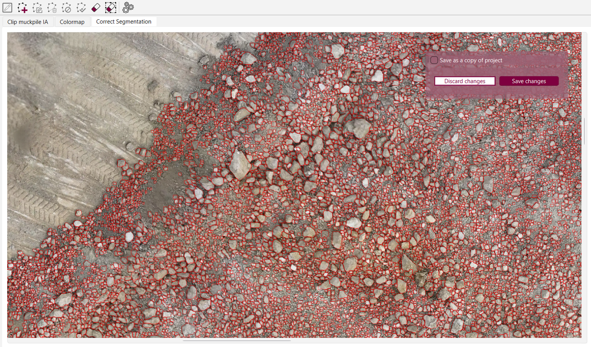
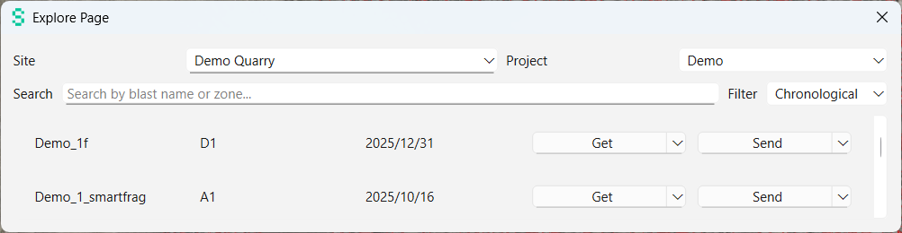

1Application Overview
1.1 What is SmartFrag?
SmartFrag is a post-blast quality-control application for the mining and quarrying industry. It measures the fragmentation of a blasted muckpile — the size distribution of the broken rock — from aerial imagery captured by drone, and estimates the volume of the pile from an elevation model.
The workflow is deliberately short: you load an orthomosaic of the blast, draw (or let the AI detect) the outline of the muckpile, run the fragmentation analysis, and read the results as a size-distribution curve, a colour-coded map of the pile and a set of passing-size KPIs. A three-page PDF report can be produced in one click, and results can be pushed to the Explore web platform for long-term traceability.
1.2 Who is it for?
No specialist image-processing knowledge is required. Familiarity with drill-and-blast vocabulary (muckpile, oversize, fines, passing size) and with your own photogrammetry output is assumed.
1.3 Business context
Fragmentation drives the whole downstream chain: loading rates, crusher throughput, energy consumption, secondary breakage costs. Measuring it used to mean image-by-image manual delineation or physical sieving of a sample — slow, subjective and unrepresentative.
SmartFrag automates the detection of individual rocks with a deep-learning segmentation model, then derives the whole distribution from the detected population plus a correction for the un-detected fine material. The result is repeatable, auditable and fast enough to be produced between two blasts.
1.4 How SmartFrag works
Every analysis follows the same five stages. Each one produces an object in the project tree, so you can always go back a step.
- Import. An orthomosaic (and optionally a DEM and design strings) is loaded into a project. SmartFrag reads the georeferencing to know how many metres a pixel represents.
- Clip. You delimit the muckpile with a polygon — by hand, from an imported DXF/STR string, or with the AI contour model. Everything outside the polygon is excluded from the analysis.
- Detect. The fragmentation engine tiles the clipped image and detects every visible rock, returning an outline, a bounding box, a surface area and a confidence score for each.
- Analyse. Rock surfaces are converted to diameters, binned into a cumulative passing curve, corrected for fines, and summarised as D10…D100 percentiles.
- Deliver. Results are displayed as a graph and a colour map, corrected if needed, exported as PDF / PNG / GeoTIFF / JSON, and optionally pushed to Explore.
1.5 Conventions used in this document
| Convention | Meaning |
|---|---|
| Open Orthomosaic | A label exactly as it appears in the SmartFrag interface. |
| Project › New Project | A menu path: open the first menu, then choose the second item. |
| Ctrl+Z | A keyboard shortcut. |
| muckpile | A domain term — see the Glossary. |
2Installation & First Steps
2.1 Requirements
| Item | Requirement |
|---|---|
| Operating system | Windows 10 or 11, 64-bit. SmartFrag is a Windows-only desktop application. |
| Disk space | Approximately 1.5 GB for the installed application. Allow additional space for your projects: SmartFrag does not copy your imagery, but reports and exported images accumulate. |
| Memory | 16 GB RAM recommended. The full-resolution orthomosaic is held in memory during processing; a large survey on a machine with 8 GB may become unresponsive. |
| Graphics | No dedicated GPU is required. If a CUDA-capable GPU is present it is used automatically for the AI contour model, which is faster. |
| Screen | 1920×1080 or larger. The three-panel layout is cramped below that. |
| Network | Only needed for Explore sign-in and data exchange. Fragmentation and volume run entirely offline. |
| Licence | A valid licence is required. It is obtained by signing in to Explore once, after which the application can run offline as long as the local licence remains valid. |
2.2 Installing SmartFrag
SmartFrag is delivered as a compressed archive, for example smartfrag-v0.7.9-windows.zip. It is a portable application — there is no installer and no administrator right is required.
- Copy the archive to the machine, ideally to a local disk rather than a network share.
- Right-click the archive and choose Extract All…. Extract it to a permanent location such as
C:\SmartFrag\. - Open the extracted folder. It contains
SmartFrag.exeand an_internalfolder. - Double-click
SmartFrag.exeto start the application. Create a desktop shortcut if you use it regularly.
_internal folder. It holds the AI models, the detection engine and the interface resources. Separating it from SmartFrag.exe, or running the executable from inside the still-zipped archive, will prevent the application from starting.2.3 Starting the application
On launch SmartFrag checks your licence before showing the main window:
- If a valid local licence is found, the main window opens directly on the start page.
- If it is missing or expired, the Connection Page dialog appears first and you must sign in to Explore (see below).
The start page shows two large buttons, New Project and Load Project. Until you choose one, all import and processing commands stay greyed out — this is normal.

The status bar
The bar at the bottom of the window always shows four indicators:
| Indicator | Meaning |
|---|---|
| Version 0.7.9 | The application version. Quote it in any support request. |
| Muckpile Fragmentation Tool | The product name. |
| Tester License | The licence type currently in force. |
| Explore + coloured dot | Connection state to the Explore platform: green = connected, red = not connected. Fragmentation works either way. |
2.4 Signing in to Explore
Explore is the EPC web platform where blast data is centralised. Signing in does two things: it validates your SmartFrag licence, and it lets you exchange data with the platform.
- Choose Explore › Log in, or wait for the dialog to appear automatically at start-up.
- Enter your Explore Username and Password. The eye icon at the right of the password field reveals what you typed.
- Click Log in. On success a Login Successful message confirms it and the Explore dot turns green.
| Message | What it means & what to do |
|---|---|
| Login Failed — Please enter both username and password. | One of the two fields is empty. |
| Login Failed — Invalid username or password. | Credentials rejected by Explore. Check the caps lock and your Explore account. |
| Access Denied — Your account does not have access to SmartFrag. | Your Explore account is valid but is not entitled to SmartFrag. Contact your administrator to have the entitlement added. |
| No internet connection or Explore server is unreachable… | Network or server problem. Reconnect and retry, or close the dialog to continue offline if your local licence is still valid. |
To sign out, use Explore › Log out. This clears the stored token; the Explore dot turns red and the Explore › Export command is disabled until you sign in again.
2.5 Interface overview
The main window is divided into five zones.

| Zone | Contents |
|---|---|
| Menu bar | The four menus Project, Process, Explore and Settings. At its right end, the label Open/Close : with two toggle buttons, Left panel and Right Panel, that show or hide the side panels. |
| Toolbar | Icon shortcuts for the most-used commands, grouped by purpose: import, export, clipping, processing, polygon editing, settings. Icons are greyed out when the command does not apply to what is selected. |
| Left panel | The project tree, headed Project. Every image, clip, result and volume in the project appears here. Selecting a node is what opens its view and enables the relevant commands. |
| Central area | Tabbed views. Each selected node opens its own tab; editors such as the Contour Editor also open here. Tabs can be closed with their ×. When no tab is open the SmartFrag logo is shown. |
| Right panel | The settings panel of the selected node — file information and resolution for an image, KPIs for a graph, threshold and colour controls for a colormap, volume controls for a clip with a DEM. It hides itself automatically when there is nothing to show. |
2.6 Settings
Open the settings with Settings in the menu bar or the gear icon at the right of the toolbar. The dialog has five fields.
| Field | Purpose |
|---|---|
| Default save path : | The folder proposed when you create a new project. Use Browse to pick it. |
| Explore : | Which Explore environment to talk to: Production, Staging or Local. Leave it on Production unless instructed otherwise; Local reveals an extra field for a local server address. |
| Select Language : | Interface language: En, Fr or Es. |
| Threshold : | The default intermediate size thresholds of the colormap, in millimetres, separated by semicolons — for example 100;200;300. |
| Threshold master : | The full threshold set including the minimum and maximum bounds, for example 0;100;200;300;1000. |
Save and Quit stores the settings; Cancel discards them.
3Projects & Data Import
A SmartFrag project is a folder that collects the fragmentation results of one or more muckpiles. It stores results and references to your imagery — not the imagery itself.
3.1 Creating a project
- Choose Project › New Project, or click the large New Project button on the start page.
- In the dialog, fill in Project name :. A dated default such as
SmartFrag Project 2026_8_25__14_30is proposed; replace it with something meaningful, for example the blast reference. - Check Save path :, or click Browse to choose another folder.
- Click Create new project.
SmartFrag creates a folder named after the project inside the save path, resets the workspace, and enables Open Orthomosaic. The folder is empty until the first fragmentation run.
3.2 Loading an existing project
- Choose Project › Load Project, or the Load Project button on the start page.
- Navigate to the project folder and select its
.mpkfile — it is namedProject_v43.mpk. - Wait for the Loading project… progress dialog to close.
SmartFrag re-opens the source orthomosaic from the path recorded in the project, rebuilds the clip polygons, restores every rock detection and re-creates the Distribution graph and Colormap nodes.
| Restored | Not restored |
|---|---|
| Orthomosaic reference, ground resolution, clip polygons, all rock detections, distribution graph, colormap. | DEM, DXF/STR overlays, computed volumes, manually typed resolutions and colormap thresholds. Re-import and recompute these if you need them. |
_v43.mpk can be opened by version 0.7.9. Any other .mpk raises Wrong project version. Older projects must be opened with the version of SmartFrag that produced them.3.3 Opening an orthomosaic
The orthomosaic is the top-down, geometrically corrected image of the muckpile produced by your photogrammetry software. It is the foundation of every analysis.
- Choose Project › Open Orthomosaic, the toolbar icon, or Open › Open Orthomosaic in the left panel.
- In the Choose a file to open dialog, select your image.
- The image opens in a new tab and appears as a top-level node in the project tree.
| Format | Behaviour |
|---|---|
| .tif (georeferenced GeoTIFF) | Recommended. The coordinate system, the affine transform and the pixel size are read automatically, and the ground resolution in metres per pixel is filled in for you. This is the only format that also allows a DEM and DXF/STR strings to be used. |
| .tif (no georeferencing) | Opens normally, but the resolution stays at 0. You must set the scale by hand (Setting the scale) before running a fragmentation, otherwise every diameter is meaningless. |
| .png, .jpg, .jpeg | Accepted for a quick look. A resize dialog appears first and the image is resampled to the dimensions you enter (default 640×640, allowed range 64–4096 px per side). The aspect ratio is not preserved and there is no georeferencing, so the scale must be set by hand. |
.tif — .tiff is not in the file filter and will not be listed. Rename the file if your photogrammetry software wrote the long form.
3.4 Setting the scale
Every diameter SmartFrag reports is a pixel measurement multiplied by the ground resolution. Getting the scale right is therefore the single most important input of the whole analysis.
With an image node selected, the right panel shows:
| Field | Description |
|---|---|
| Filename | The name of the loaded file. |
| Image size | The dimensions in pixels. |
| Resolution (m/pixel) | Two editable boxes, X and Y. Filled automatically for a georeferenced GeoTIFF; zero otherwise. |
| Find Resolution | A checkbox that turns on the on-image ruler. |
Measuring the scale on the image
Use this when the resolution is unknown and you can identify a feature of known length in the image — a vehicle, a bench face, a survey target, a length of drill rod.
- Tick Find Resolution, or press R over the image. The cursor becomes a crosshair.
- Click the first end of the known feature. As you move, a live readout shows Distance: n pixels.
- Click the second end. The Find the scale dialog opens, showing Length in pixels : already filled in.
- Type the true length in Length in meter : and click Submit. Both resolution boxes are updated.
3.5 Opening a DEM
A Digital Elevation Model adds the third dimension. It is required for volume estimation and can also feed the AI contour model.
- Select the orthomosaic node in the project tree — Open DEM is only enabled there.
- Choose Project › Open DEM and select a .tif elevation raster.
SmartFrag reprojects and resamples the DEM onto the exact grid of the orthomosaic, so the two do not need to share the same extent or pixel size — they only need to overlap and to be georeferenced. The DEM then appears as a DEM entry in the DEM/DXF items list of the right panel, and the Volume command becomes available.
| Requirement | Why |
|---|---|
| The parent orthomosaic must be a georeferenced GeoTIFF | The DEM is aligned using the ortho's coordinate system and transform. A PNG/JPG ortho has none. |
| The DEM must declare a nodata value | Void cells are masked and then filled with the mean elevation. A DEM without a declared nodata value fails to load. |
| Only one DEM per orthomosaic | Loading a second DEM replaces the first. |
3.6 Opening DXF / STR
Design strings from your mine-planning package can be overlaid on the orthomosaic, and used directly as the muckpile boundary.
- Select the orthomosaic node.
- Choose Project › Open DXF/STR.
- Pick a .dxf or .str file. No file filter is applied, so make sure you select the right extension — any other file is ignored without a message.
Imported polygons are listed in the right panel under DEM/DXF items. Selecting one draws it on the image as a red outline; deselecting removes it. Several can be selected at once. A selected polygon can be used as the clip boundary — see Clipping from a DXF/STR string.
| Format | Notes |
|---|---|
| .dxf | Every polyline in the file is imported and positioned on the image. Export from your CAD package with the model space active — a DXF saved without it cannot be placed and will not load. |
| .str | Surpac-style string file. Each string in the file becomes its own polygon in the list. |
3.7 The project tree
The tree in the left panel mirrors the way you work: each orthomosaic you load sits at the top, and everything you derive from it hangs underneath.
Click a node to open its view in the central area and its controls in the right panel. To remove one, right-click it and choose 🗑️ Delete — the node and everything under it disappear.
Which commands are available when
This table is worth bookmarking — it explains every greyed-out icon.
| Command | Enabled when the selected node is… |
|---|---|
| Open Orthomosaic | Any — from the moment a project is created or loaded. |
| Open DEM, Open DXF/STR | an orthomosaic |
| Clip muckpile, Clip muckpile IA | an orthomosaic — and no clipping tab is already open |
| Fragmentation | a clip that has not been analysed yet — one with no results under it |
| Correct Segmentation | a colormap — and no correction tab is already open |
| Volume | anything, once a DEM has been loaded for that orthomosaic |
| Export items | Always available, but they act on the current selection — select a clip or one of its results first. |
4Delimiting the Muckpile
4.1 Why clipping matters
The orthomosaic covers far more than the blasted rock: benches, haul roads, vegetation, equipment, undisturbed ground. Everything inside the clip polygon is analysed; everything outside is masked out. A sloppy boundary is the most common cause of a wrong distribution — road gravel counted as fines, a bench face counted as oversize.
SmartFrag offers three ways to obtain the boundary, all producing the same kind of clipped node:
| Method | Best for |
|---|---|
| Clip muckpile | Full manual control. The default when the pile edge is ambiguous. |
| Clip muckpile IA | A fast first guess on a clean, well-contrasted muckpile. The result is always editable. |
| From a DXF/STR string | When survey has already delivered the blast outline — the most repeatable option. |
4.2 Clip muckpile (manual)
- Select the orthomosaic node.
- Choose Process › Clip muckpile or click the toolbar icon. A new tab named Clip muckpile opens, already in drawing mode.
- Click around the muckpile to place the vertices of the boundary. Zoom with the wheel and pan by dragging between clicks.
- Right-click to close the polygon (or press the Confirm Polygon Mode button). It is added to the list on the left with a checkbox Poly n°1 and a colour swatch.
- Optionally draw more polygons: press Create Polygon Mode or Ctrl+P, then repeat.
- Adjust the shape if needed — drag a vertex, double-click an edge to insert one, double-click a vertex to remove it.
- Click Finish Editing and confirm. The tab closes and a new clipped node appears under the ortho.

4.3 Clip muckpile IA
The AI contour model detects the muckpile outline automatically from the orthomosaic.
- Select the orthomosaic node.
- Choose Process › Clip muckpile IA. The AI-based Contour Detection dialog opens and the model starts immediately — a progress bar fills while the controls stay disabled.
- When the model finishes, the dialog closes on its own and a Clip muckpile IA tab opens containing the detected contours.
- Review and correct them exactly as in the manual editor, then click Finish Editing.
The dialog also contains a Model Selection box with Select a model: and a Run Model button, offering Ortho Based Model and DEM Based Model.
4.4 Clipping from a DXF/STR string
If survey has already provided the blast outline, use it directly — it is faster and perfectly repeatable from one blast to the next.
- Load the string with Project › Open DXF/STR (Opening DXF / STR).
- In the right panel, under DEM/DXF items, click the polygon you want to use. It is drawn in red on the image.
- Choose Process › Clip muckpile.
The Contour Editor is skipped entirely: the clipped node is created straight from the selected string.
4.5 Contour Editor reference
| Action | Effect |
|---|---|
| Left click | Add a vertex (in drawing mode) |
| Left drag | Pan the view |
| Mouse wheel | Zoom in / out |
| Right click | Close the current polygon |
| Double-click a vertex | Delete that vertex |
| Double-click an edge | Insert a vertex there |
| Drag a vertex | Reshape the polygon |
| Ctrl+P | Toggle polygon-creation mode |
| Delete | Remove the selected vertex |
| Click the colour swatch | Change the display colour of that polygon |
| Untick Poly n°N | Hide it and exclude it from the saved boundary |
5Fragmentation Analysis
5.1 Running the analysis
Before you start, check two things: the clip boundary is correct, and the resolution shown in the right panel is right. Both are far harder to fix afterwards than before.
- Select the clip in the project tree.
- Choose Process › Fragmentation or click the toolbar icon.
- The modal Process Analysis dialog appears and the analysis runs.
- When it completes, click Next to close the dialog.
The progress bar advances in a few large steps rather than continuously, and the label above it names the step in progress. Long pauses are normal — detection is the slow part. When it is finished the label reports how long the run took.
Two new nodes appear under the clip: Distribution graph and Colormap. Your results are saved automatically at this point — this is the only automatic save in SmartFrag, so a run you never finish is a run you lose.
5.2 What is measured
For every rock it detects, SmartFrag records the outline, the surface area in m², and three different diameters in millimetres. Which diameter the curve and the KPIs use is your choice.
| Diameter mode | Definition | Use it for |
|---|---|---|
| Area equivalent diameter | The diameter of a circle having the same surface as the rock outline. Default. | General fragmentation reporting; comparison with sieve-based curves. |
| Min Feret diameter | The shorter side of the smallest rotated rectangle enclosing the rock — its narrowest caliper width. | Will it pass through a crusher gap or a grizzly opening? |
| Max Feret diameter | The longer side of that rectangle — the rock's longest dimension. | Oversize and boulder identification; bucket and truck loading constraints. |
Two filters applied automatically
- Detections with a zero confidence score are dropped.
- Rocks whose outline touches the clip boundary are discarded, because they are cut off and their apparent size would be wrong. This is why a slightly tight boundary is safer than a generous one.
The fines correction
No camera can resolve individual fines. SmartFrag therefore counts the muckpile surface it could not attribute to any rock, and reports it as the finest fraction of the curve.
5.3 Distribution graph & KPIs
Select the Distribution graph node. The tab shows the cumulative passing curve — percentage passing on the vertical axis against diameter in millimetres on the horizontal axis.

The right panel offers:
| Control | What it does |
|---|---|
| Diameter-mode combo | Switches between Area equivalent diameter, Min Feret diameter and Max Feret diameter. The curve and the KPI table are rebuilt instantly from the existing detections — nothing is re-detected, so you can compare modes freely. |
| Log[X] | Switches the diameter axis to a logarithmic scale — the conventional way to read a granulometry curve. |
| KPI table | The passing sizes D10 to D100: for each percentage, the diameter below which that share of the material lies. D50 is the median size; D80 is the usual contractual KPI. |
5.4 Colormap
Select the Colormap node to see the muckpile with every detected rock filled according to its size class. This is the view that makes fragmentation quality readable at a glance — a pocket of oversize in one corner of the pile is immediately obvious.

5.5 Thresholds & colours
The right panel of the colormap is where you define the size classes. At the top, a switch selects between two modes.
Static mode
Fixed size classes, each with its own colour — the mode to use for reporting and for comparing blasts against site standards.
- Set the number of classes with the − and + buttons next to Number of thresholds. Between one and five intermediate thresholds are allowed.
- Type the boundary of each class in its Threshold n°k [mm] : box. The first and last rows are read-only bounds — they show the minimum and the maximum of the range.
- Click the coloured bar beside a class to choose its colour.
- Click Valid to apply. Each class shows the share of the muckpile it represents as Percentage : xx.xx %.
100 / 200 / 300 mm over a 0–1000 mm range. You can also pre-set them in Settings (Settings).Dynamic mode
A movable band instead of fixed classes: drag the two handles of the vertical selector to isolate a size range, and the colormap highlights only the rocks inside it while Selected percentage [%] reports what share of the pile they represent.
Other controls
| Control | Effect |
|---|---|
| No color | Removes the colour overlay and shows the bare orthomosaic. Useful to check a detection against the original image. |
| Ruler | Turns on the measuring tool (Ruler). |
| Show Histogram | Opens the histogram window (Histogram). |
5.6 Histogram
Show Histogram opens a separate window with one bar per size class, in the class colour, labelled with its percentage of the muckpile and its size range (d < 100 mm, 100 < d < 200 mm, and so on). The vertical axis is Distribution [%].
The window follows the thresholds you set in the colormap panel and updates when you change them. It can be exported as a PNG image from the window itself, and the same histogram is embedded in page 3 of the PDF report.
5.7 Inspecting one rock
In the Colormap view, click any rock. A small floating card appears showing:
- Rock n° — its index in the detection list
- Diameter — in millimetres
- Surface — the measured area of the outline
The selected rock's outline turns green. Clicking it again, or clicking bare ground, hides the card. The card can be dragged out of the way.
Two buttons on the card act on that rock:
| Button | Effect |
|---|---|
| Delete polygon (bin icon) | Repaints the rock in the colour of the first size class — treat it as « this is not a rock, it is ground ». |
| Ignore polygon (cancel icon) | Repaints it white and removes its outline — treat it as « exclude this from the picture ». |
5.8 Ruler
The ruler measures a distance directly on the image. Tick Ruler in the colormap panel, or press R over an image view. Click the start point, then the end point; the distance is displayed in metres, computed from the ground resolution. Untick to leave ruler mode.
6Correcting the Segmentation
6.1 When to correct
Automatic detection is very good but not perfect. Correcting is worthwhile when you see:
- Missed boulders — a large rock left uncoloured. It is absent from the statistics and its surface is counted as fines, biasing the curve twice over.
- Merged rocks — several blocks captured as one huge outline, inflating the coarse end.
- False detections — shadows, tyre tracks, water or equipment detected as rock.
- Wrong outlines — an outline that clearly overruns or undercuts the visible block.
6.2 Opening the editor
- Select the Colormap node — Correct Segmentation is only enabled there.
- Choose Process › Correct Segmentation or click the toolbar icon.
- The Polygon Editor opens with every detected rock drawn as an editable outline, and the polygon tools in the main toolbar become active.

6.3 Toolbar reference
| Button | What it does |
|---|---|
| Add Polygon | Start drawing a new rock. Click each vertex, then right-click or press Validate Polygon to close it. At least three points are required. |
| Validate Polygon | Closes the polygon currently being drawn, or applies the current erase-selection. |
| Erase | Turns the cursor into an eraser. Click a rock to delete that detection. Click the button again to leave eraser mode. |
| Erase Selection | Draw a polygon over an area; every rock intersecting it is deleted in one go. Use it to clear a whole region of false detections. |
| Edit Polygon, Delete Polygon, Ignore Polygon | These three toolbar icons stay inactive in the editor. The equivalent per-rock commands are on the right-click menu of each outline (Editing a rock outline). |
6.4 Editing a rock outline
Right-click any rock outline to open its context menu:
| Menu item | Effect |
|---|---|
| Informations | Reports the rock's measurements. |
| Modify | Puts the outline into edit mode: its vertices appear as draggable handles. |
| Delete | Removes the detection. Its area reverts to the first size class. |
| Valid modif | Confirms the edit. The diameter, area and Feret values are recomputed immediately and the colormap is repainted. |
While an outline is in edit mode
| Action | Effect |
|---|---|
| Drag a handle | Move that vertex |
| Double-click an edge | Insert a new vertex |
| Double-click a handle | Delete that vertex |
| Delete | Delete the selected vertex |
| Ctrl+Z | Undo the last deletion — restores the rock, its outline and its contribution to the statistics. Up to 20 deletions are kept. |
| Mouse wheel / drag | Zoom / pan |
6.5 Saving corrections
The right panel of the editor offers three exits:
| Command | Effect |
|---|---|
| Save changes | Applies the corrections: the distribution curve, the histogram, the KPI table and the colormap are all rebuilt, and the project file is rewritten. Confirmed by Success — Corrections saved successfully. |
| Save as a copy of project | Meant to keep the original run alongside the corrected one. In version 0.7.9 it behaves exactly like Save changes and does not create a second copy. If you want to keep the uncorrected results, duplicate the project folder in Windows Explorer before you start correcting. |
| Discard changes | Closes the editor and restores the colormap to its state before editing. |
7Volume Estimation
With a DEM loaded, SmartFrag computes the volume of material inside a clip boundary relative to a reference elevation. This supports stockpile inventory, reconciliation and excavation planning.
7.1 Prerequisites
- A georeferenced orthomosaic with a correct ground resolution.
- A DEM loaded against that ortho (Opening a DEM).
- At least one clipped node defining the footprint to measure.
7.2 Computing from the panel
Select a clipped node. With a DEM present, the right panel gains a Volume block.
| Control | Description |
|---|---|
| Method: | Min level uses the lowest elevation found inside the clip as the reference plane — the usual choice for a muckpile sitting on a floor. Custom level lets you type the reference elevation yourself, for example a design floor RL. |
| Elevation: | The reference elevation in metres. Filled automatically in Min level mode; editable in Custom level mode. |
| Cut Volume: | Volume above the reference surface — the material to be excavated. |
| Fill Volume: | Volume below the reference surface — the material that would be needed to fill up to it. |
| Net Volume: | The net result, fill minus cut. |
| Compute | Runs the computation and creates a volume node in the tree. |
| Reload icon | Re-reads the DEM and the clip boundary. Use it after correcting a boundary. |
All volumes are reported in cubic metres to three decimals.
7.3 Volume Details dialog
To compare several muckpiles at once, choose Process › Volume. The Volume Details dialog lists one section per orthomosaic, titled Volume: {name}, each with a table:
| Column | Content |
|---|---|
| Clipped file | The name of the clip |
| Cut volume (m³) | Material above the reference |
| Fill Volume (m³) | Material below the reference |
| Net Volume (m³) | Net result |
| Elevation Min (m) | The reference elevation used, editable in Custom elevation mode |
A single Computation method : combo at the top applies Elevation Min or Custom elevation to all sections. Compute Volume recalculates everything; Close dismisses the dialog.
Any ortho without a DEM shows No DEM loaded for this muckpile. in red instead of a table.
Exporting to Excel
Export becomes available once volumes have been computed. It opens a Save As dialog filtered to Excel File (*.xlsx) and writes a Volume Export sheet with one row per clip: Parent Image, Clipped, Cut Volume (m³), Fill Volume (m³), Net Volume (m³), Elevation Min (m). Success and failure are both confirmed by a message.
7.4 The volume view
Selecting a volume node opens a view where each measured zone is tinted in its own colour over the orthomosaic. Hover any zone to get a tooltip with its name and its Cut, Fill and Net values in m³ — a quick way to compare several piles on one image.
8Explore Integration
Explore is the EPC web platform where blasts are planned and recorded. Connecting SmartFrag to it means fragmentation results are attached to the blast they belong to, stored centrally, and available to the whole team and to the client.
8.1 Connecting
see Signing in to Explore. The Explore indicator in the status bar must be green before the exchange commands work. The environment — Production, Staging or Local — is chosen in Settings.
8.2 The Explore Page
Choose Explore › Export to open the Explore Page.
- Pick your Site from the first combo. It is type-ahead searchable, which helps on accounts with many sites.
- Pick the Project. The blast list below is populated.
- Narrow the list with the Search box — it matches on blast name and zone — and order it with the Filter combo, Chronological or Alphabetical.
Each blast row shows its name, its zone and its planned date, followed by two buttons.

8.3 Sending & retrieving
| Button | Menu item | Effect |
|---|---|---|
| Get | Get Fragmentation results | Retrieves fragmentation results already stored on Explore for that blast. |
| Send | Send Image | Uploads the colormap image of the muckpile. |
| Send Graph | Uploads the distribution data. | |
| Send Muckpile Polygon | Uploads the clip boundary. | |
| Send all | Uploads image, graph and polygon in one operation. The usual choice. |
Each operation ends with a confirmation: Success — Data was sent successfully., or Error — Data sending failed.
9Exports & Reporting
All export commands live under Project › Export.
9.1 The PDF report
Report (PDF) produces the deliverable document — a three-page, client-ready fragmentation report.
- Select the clip (or one of its result nodes) you want to report on.
- Choose Project › Export › Report (PDF), or the PDF icon in the toolbar.
- In Choose name and path for the PDF report, accept
Fragmentation_Report.pdfor give it a blast-specific name. - Fill in the Report Form (The report form) and click OK.
- The PDF is written and opened automatically in your default viewer.
| Page | Contents |
|---|---|
| 1 — Cover | Fragmentation report, project name, blast pattern, a details block with contractor, blast localisation, client and blast date & time, the customer logo, the EPC logo, and a signature block with the name and title you entered. |
| 2 — Results | General informations (total area, blast volume, min / max / mean diameter, standard deviation, rock count), the colour legend of the size classes, the Particle size distribution table, the colormap image, the Size passing details table and the size-distribution graph. |
| 3 — Annexes | The size-distribution histogram and, if you supplied one, the blast sequence image. |
9.2 The report form
The form has two parts: identification fields you fill in, and measured values pre-filled from the analysis.
| Field | Notes |
|---|---|
| Project name | Printed large on the cover. |
| Date | Report date. Defaults to today. |
| Blast Pattern | The pattern reference, printed on the cover and in the header of pages 2–3. |
| Contractor, Client, Blast Localisation | The details block on the cover. |
| Blast date & time | When the blast was fired. |
| Name, Title | Who signs the report. Remembered for next time. |
| Customer logo | Click the frame or drag an image onto it (PNG, JPG, BMP, SVG). |
| Sequence image | Optional initiation-sequence diagram, printed on page 3. |
The measured values — Total area (m²), Volume (m³), Min diameter (mm), Max diameter (mm), Mean diameter (mm), Standard deviation, Rocks count — are pre-filled from the analysis and remain editable, so you can substitute a surveyed volume for the computed one.
9.3 Image & data exports
| Command | Output | Use it for |
|---|---|---|
| Muckpile image (PNG) | The colour-coded muckpile, saved as a GeoTIFF (default name muckpileImage.tif) that keeps the georeferencing of the source orthomosaic. |
Overlaying the fragmentation map in your GIS or mine-planning package. |
| Graph image (PNG) | The distribution graph and histogram as PNG files in a folder you choose. | Dropping the figures into a slide deck or an email. |
| Data (JSON) | The full numeric results (default name graphDatas.json): cumulative curve, histogram bins and KPI percentiles. |
Feeding your own dashboards, reconciliation sheets or statistical tools. |
.tif extension the dialog proposes.10Reference
10.1 Menu reference
| Menu | Item | Action |
|---|---|---|
| Project | New Project | Create a project |
| Load Project | Open an existing .mpk project |
|
| Open Orthomosaic | Load a TIF / PNG / JPEG image | |
| Open DEM | Load an elevation TIF | |
| Open DXF/STR | Load design strings | |
| Export › Report (PDF) | Produce the three-page report | |
| Export › Muckpile image (PNG) | Export the colormap as GeoTIFF | |
| Export › Graph image (PNG) / Data (JSON) | Export figures / numeric results | |
| Quit | Close SmartFrag | |
| Process | Clip muckpile IA | AI contour detection |
| Clip muckpile | Manual or DXF-based clipping | |
| Fragmentation | Run the size analysis | |
| Volume | Open the Volume Details dialog | |
| Correct Segmentation | Open the polygon editor | |
| Explore | Log in | Sign in to the platform |
| Export | Open the Explore Page | |
| Log out | Clear the stored session | |
| Settings | — | Open the settings dialog |
10.2 Toolbar reference
Left to right, in groups:
| Group | Icons |
|---|---|
| Import | Open Orthomosaic, Open DEM, Open DXF/STR |
| Export | Report (PDF) |
| Clipping | Clip muckpile, Clip muckpile IA |
| Processing | Fragmentation, Volume |
| Correction | Correct Segmentation |
| Polygon tools | Add Polygon, Edit Polygon, Delete Polygon, Ignore Polygon, Validate Polygon, Erase, Erase Selection — active only inside the polygon editor |
| Settings | Gear icon |
10.3 Keyboard & mouse
| Input | Context | Effect |
|---|---|---|
| R | Any image view | Toggle the ruler / resolution tool |
| Ctrl+P | Contour Editor | Toggle polygon-creation mode |
| Ctrl+Z | Polygon Editor | Undo the last deletion (up to 20) |
| Delete | Polygon editors | Delete the selected vertex |
| Mouse wheel | All views | Zoom |
| Left drag | All views | Pan |
| Left click | Drawing mode | Add a vertex |
| Left click | Colormap | Show the rock information card |
| Right click | Drawing mode | Close the polygon |
| Right click | Polygon Editor | Open the rock context menu |
| Right click | Project tree | Open the delete menu |
| Double click | Polygon editors | On a vertex: delete it. On an edge: insert one. |
10.4 File formats
| Purpose | Accepted / produced | Notes |
|---|---|---|
| Orthomosaic (in) | .tif, .png, .jpg, .jpeg |
Georeferenced .tif strongly recommended. .tiff is not accepted. |
| DEM (in) | .tif |
Must be georeferenced and declare a nodata value. |
| Design strings (in) | .dxf, .str |
DXF needs an active viewport; STR is Surpac-style. |
| Project (in / out) | Project_v43.mpk |
Written automatically after each fragmentation run. |
| Report (out) | .pdf |
Three pages, default name Fragmentation_Report.pdf. |
| Colormap (out) | .tif |
GeoTIFF, keeps the source georeferencing. |
| Figures (out) | .png |
Distribution graph and histogram. |
| Numeric results (out) | .json |
Curve, histogram bins and KPI percentiles. |
| Volumes (out) | .xlsx |
One Volume Export sheet. |
10.5 Settings reference
| Setting | Default | Effect |
|---|---|---|
| Default save path : | Application src/ProjectSave folder |
Proposed folder for new projects |
| Explore : | Production | Which platform environment to use |
| Select Language : | En | Interface language; restart required |
| Threshold : | 100;200;300 |
Default intermediate size classes, mm |
| Threshold master : | 0;100;200;300;1000 |
Full class range including bounds, mm |
10.6 Where data is stored
| Item | Location |
|---|---|
| Fragmentation results | In the project folder, in the .mpk file. This is what you back up and what you reopen. |
| Source imagery | Left where it is — the project only remembers where to find it. Do not move or rename your orthomosaics after processing, or SmartFrag will ask you to locate them again. |
| Application settings | With your Windows account, not in the project. Not transferred when you copy a project folder to a colleague. |
| Explore session | Stored with the settings; cleared by Log out. |
| Log file | debug.log, beside the application. Attach it to any support request. |
11Troubleshooting & FAQ
11.1 Start-up & licence
SmartFrag.exe from inside the zip, and that the _internal folder sits beside the executable. Then check whether antivirus quarantined the file.11.2 Loading files
.tiff orthomosaic — rename it to .tif.*_v43.mpk files. Open older projects with the version that produced them, or re-run the analysis from the source imagery.11.3 Clipping
11.4 Fragmentation
11.5 Volume
11.6 Explore & exports
12Glossary
| Term | Definition |
|---|---|
| Blast pattern | The geometric layout of blastholes (burden, spacing, depth) designed for a given shot. |
| Clip / clipped | In SmartFrag, the polygon delimiting the muckpile, and the resulting tree node. Only what is inside is analysed. |
| Colormap | The result view where every detected rock is filled with the colour of its size class. |
| Cumulative passing curve | The granulometry curve: for each size, the percentage of material finer than that size. |
| Cut volume | Material lying above the reference plane — what would have to be excavated. |
| D50, D80… | Passing sizes. D80 = the size below which 80 % of the material lies. D50 is the median. |
| DEM | Digital Elevation Model — a raster of ground elevation, produced here by photogrammetry. |
| DXF | CAD exchange format used to carry design strings from mine-planning software. |
| Feret diameter | The distance between two parallel tangents to a particle. The minimum Feret is its narrowest caliper width; the maximum is its longest dimension. |
| Fill volume | Material lying below the reference plane — what would be needed to fill up to it. |
| Fines | The finest fraction of the blasted material, too small to be resolved individually in the imagery. SmartFrag estimates it from the surface it could not attribute to any rock. |
| Fragmentation | The size distribution of rock produced by a blast. The primary output of SmartFrag. |
| GeoTIFF | A TIFF image carrying its coordinate system and geographic position, allowing SmartFrag to derive the scale automatically. |
| Ground resolution | The size of one image pixel on the ground, in metres. The scale factor behind every reported diameter. |
| Muckpile | The heap of broken rock left by a blast, before loading. |
| Orthomosaic | A geometrically corrected, seamless top-down image assembled from overlapping aerial photographs. |
| Oversize | Blocks too large for the downstream equipment, requiring secondary breakage. The costly tail of the distribution. |
| Passing size | See D50, D80. |
| Photogrammetry | Deriving measurements and 3D geometry from overlapping photographs — how the orthomosaic and DEM are produced. |
| Segmentation | The automatic delineation of individual rocks in the image. Reviewed and edited in Correct Segmentation. |
| STR | Surpac string file — a text format carrying survey or design polylines. |
| Threshold | A size boundary separating two colour classes in the colormap. |
13Appendix — Technical Notes
13.1 A.1 Inside a fragmentation run
The Process Analysis dialog reports five steps. Knowing which one is slow helps when a run appears stuck.
| Progress | Label | What is happening |
|---|---|---|
| 0 % | Initializing... | The clipped image is prepared and handed to the detection engine. |
| 25 % | Running AI model | The engine divides the image into tiles and detects the rocks in each. This is the long step — a long pause here is normal. |
| 50 % | Processing predictions | Detections are reassembled across tiles, filtered, and converted from pixels to real-world sizes using the ground resolution. |
| 75 % | Build views | The curve, the histogram and the colour map are built, and the project file is written. |
| 90–100 % | Process completed → Elapsed time | Finished. Next becomes clickable. |
Filters applied to the detections
- Detections with a null confidence score are dropped.
- Rocks whose outline touches the clip boundary are discarded — they are cut off by the boundary, so their apparent size would be wrong. This is the reason a slightly tight clip is safer than a generous one.
How the curve is built
Diameters are accumulated into 10 mm bins to form the cumulative passing curve, and into 50 mm bins for the histogram. The muckpile surface not attributed to any rock is added to the smallest bin as the fines fraction. D10 to D100 are then read off the resulting curve.
13.2 A.2 The AI models
SmartFrag uses two independent models, which is why one can work while the other does not.
| Model | Used by | Behaviour |
|---|---|---|
| Contour model | Clip muckpile IA | A segmentation network run on a downscaled, contrast-enhanced copy of the orthomosaic. Its mask is converted to polygons, of which only the three largest are kept and simplified. It benefits from a CUDA GPU when one is present. |
| Detection engine | Fragmentation | A separate program bundled with the application, which tiles the image and returns one outline, bounding box, area and confidence score per rock. It runs on the CPU and is unaffected by the contour model. |
How the diameters are derived
| Mode | Computation |
|---|---|
| Area equivalent diameter | The rock's pixel count × the ground resolution gives its surface; the reported diameter is that of a circle of the same surface. |
| Min Feret diameter | The shorter side of the smallest rotated rectangle enclosing the outline. |
| Max Feret diameter | The longer side of that same rectangle. |
All three are recomputed from the stored outlines when you change the mode, so switching is instantaneous and never re-runs the detection.
13.3 A.3 Files & locations
| Item | Exact location / name |
|---|---|
| Project file | <save path>\<project name>\Project_v43.mpk. One record is appended per fragmentation run. Only files ending in _v43.mpk can be opened by version 0.7.9. |
| Application settings | Windows registry, HKEY_CURRENT_USER\Software\Smartfrag — save path, language, Explore environment and token, thresholds and colours, reporter name and title. |
| Log file | debug.log, in the application folder. |
| Default export names | Fragmentation_Report.pdf, muckpileImage.tif, graphDatas.json. |
| Application layout | SmartFrag.exe plus an _internal folder holding the models, the detection engine and the interface resources. The two must stay together. |
13.4 A.4 Known limitations of version 0.7.9
| Behaviour | Consequence for the user |
|---|---|
| Save as a copy of project writes to the same project file as Save changes | No second copy is produced. Duplicate the project folder manually before correcting if the original run must be kept. |
| Min diameter (mm) in the report form is a placeholder, not a measurement | Must be reviewed and replaced before the report is signed. |
| DEM Based Model is not operational | Only the ortho-based contour model runs. The entry is greyed out without a DEM and returns nothing when selected. |
| Cancel does not interrupt the detection engine | The window stays unresponsive until the current image is finished. |
| The lower progress bar and Waiting... are not driven | Cosmetic only — watch the upper bar. |
| Delete polygon and Ignore polygon on the rock card change the picture only | The curve and the KPIs are not recomputed and the change is not saved. Use Correct Segmentation to alter the statistics. |
| An unsupported file selected in an open dialog is ignored without a message | If nothing happens after choosing a file, check its extension against File formats. |
| A few dialogs are not translated | The image-resize dialog for PNG/JPG and the project-open dialog title appear in French regardless of the interface language. |
| Clearing a Resolution (m/pixel) box causes an error | Select the value and type over it rather than emptying the field. |